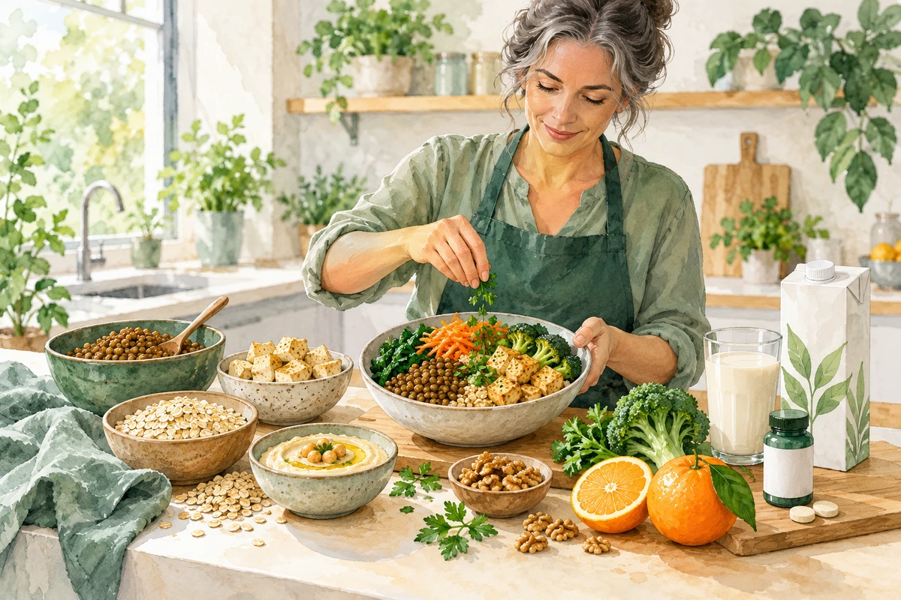
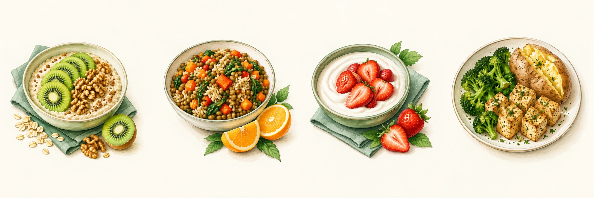

SITUACIONES ESPECIALES
Alimentación vegetariana
Planificar bien para comer con variedad y cubrir tus necesidades.

Lo esencial
Una alimentación ovolactovegetariana excluye carne y pescado, pero incluye huevos y lácteos. Una alimentación vegana excluye alimentos de origen animal. En adultos, ambas pueden ser adecuadas si se planifican bien. “Vegetal” por sí solo no significa nutritivo.
La B12 no se deja al azar
Algas, espirulina y fermentados no son fuentes fiables de B12. En personas ovolactovegetarianas también hay que comprobar si el aporte es suficiente. Acuerda producto, dosis y frecuencia con tu equipo; no basta con “tomar algo de vez en cuando”.
Alimentos y nutrientes clave
Busca variedad a lo largo del día y revisa el etiquetado de los productos enriquecidos.
| Qué cubrir | Fuentes y consejo |
|---|---|
| Proteína | Legumbres, tofu, tempeh, soja texturizada; huevos y lácteos si los incluyes. No hace falta combinar legumbre y cereal en el mismo plato. |
| Calcio | Bebida vegetal enriquecida, tofu elaborado con calcio, lácteos si los tomas. Revisa la etiqueta. |
| Hierro | Legumbres, tofu, semillas y cereales integrales. Añade vitamina C: pimiento, naranja o kiwi. |
| Yodo | Sal yodada en poca cantidad; si no cubres el aporte, valora suplemento. No uses algas para dosificar yodo. |
| Omega-3 | Nueces, lino molido o chía. El DHA de algas se valora en situaciones concretas. |
| Vitamina D y B12 | La D se adapta a tu situación. La B12 en dieta vegana requiere suplementación fiable. |
Con moderación o fuera de tu patrón
Limita bollería vegana, snacks, bebidas azucaradas y sustitutos muy salados. En dieta vegana se excluyen carne, pescado, huevos, lácteos y otros alimentos animales por elección del patrón, no porque sean una alergia.
Comer bien sin complicarte
| Momento | Una idea |
|---|---|
| Desayuno | Avena con bebida de soja enriquecida y fruta. |
| Comida | Lentejas con verduras y arroz; fruta rica en vitamina C. |
| Cena | Tofu o tortilla, según tu patrón, con verduras y patata. |
| Si necesitas un tentempié | Hummus con pan; yogur o alternativa de soja; frutos secos. |
• No hagas comidas basadas solo en ensalada o pasta: añade una proteína. La bebida de arroz o almendra no suele aportar tanta proteína como la de soja.
• Usa conservas de legumbres enjuagadas y verduras congeladas para ahorrar tiempo. Cocina varias porciones y congela.
• Introduce legumbres poco a poco si te producen gas. Prueba cantidades menores, bien cocidas o trituradas.
• Si tu hierro es bajo, acompaña las legumbres con vitamina C y separa té o café de esa comida.
• Lleva en papel la pauta de B12 y marca las tomas. Comprueba que el alimento enriquecido realmente indique B12 o calcio.
Menú semanal y fuentes
Menú vegetal. Soja y yogur de soja: sin azúcar y con calcio añadido. Mantén tu pauta de vitamina B12.

Las imágenes muestran ejemplos del lunes. Sigue los alimentos de la tabla para los otros días.